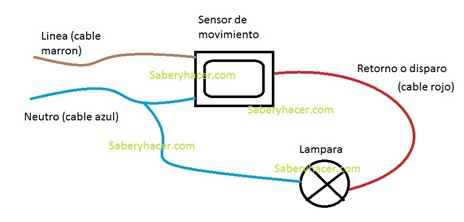
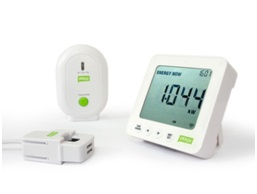
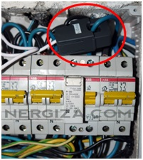
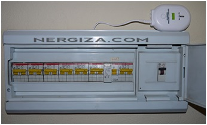

Hogar Digital
2º STI
IES Benjamin Rua


El sensor de movimiento ha sido utilizado para encender una bombilla, cuando una persona se mueve frente a él, de esta manera esa tarea queda automatizada, y además en la mayoría de los casos sirve como método seguridad.Veamos cómo se arma el circuito:
Fundamentalmente podríamos decir que es un medidor de consumo eléctrico hacía el usuario doméstico. Se compone de tres partes:
Display: Es bastante compacto y discreto. Cuenta con cinco botones que nos permitirán acceder a las funciones que comentaremos más adelante.
Sensor de corriente: Esta pieza tipo pinza amperimétrica, es un pequeño componente que situaremos dentro del cuadro eléctrico de nuestra vivienda, abrazando al cable de entrada de corriente.
Emisor: Es el encargado de enviar la señal al display y se conecta al sensor a través del cable incorporado, quedando éste (el emisor) fuera del cuadro eléctrico.
Este medidor de consumo eléctrico nos ofrece diversos datos energéticos de nuestra vivienda, en el propio display podemos consultar la siguiente información: